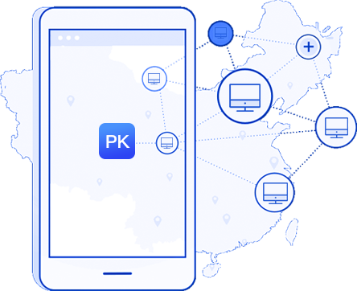

想要收款，但是支付厂商
那么多，我该怎么选？
PK支付，让您选中无忧
第四方支付是什么？
第四方支付聚合多家支付通道，通过连接第四方支付提供的API，即可任意选择pk支付提供的所有第三方支付服务，后台设置，一键切换。以往在收款时您会为了要选择连接银行还是第三方支付等支付商烦恼不已，现在，只要交给第四方支付，所有支付难关我们都会为您打通！
你需要一个强大的伙伴
让创业少走弯路
pk支付作为对第三方支付平台服务的拓展，介于第三方支付和商户之间，无支付许可牌照的限制。我们集成了各种三方支付平台/合作银行/合作电信运营商/其他服务商接口，也就是说集合了各个第三方支付及多种支付渠道的优势，能够根据商户的需求进行个性化定制，形成支付通道资源互补优势，满足商户需求，提供适合商户的支付解决方案。

选择PK支付让您的资金
流量暴涨翻倍
PK支付让您完全从资金流选择中解脱，只要连接我们的资金接口，我們平台的支付服务商都任您选择，不受任何限制。pk支付让您真正一站式管理來自各种渠道的订单资金，为您省下管理订单、对账的时间与人力成本。选择pk支付，未來若要新增支付工具、或更換支付服务商，均免重新申请接口，只需跟pk支付申请更换即可。